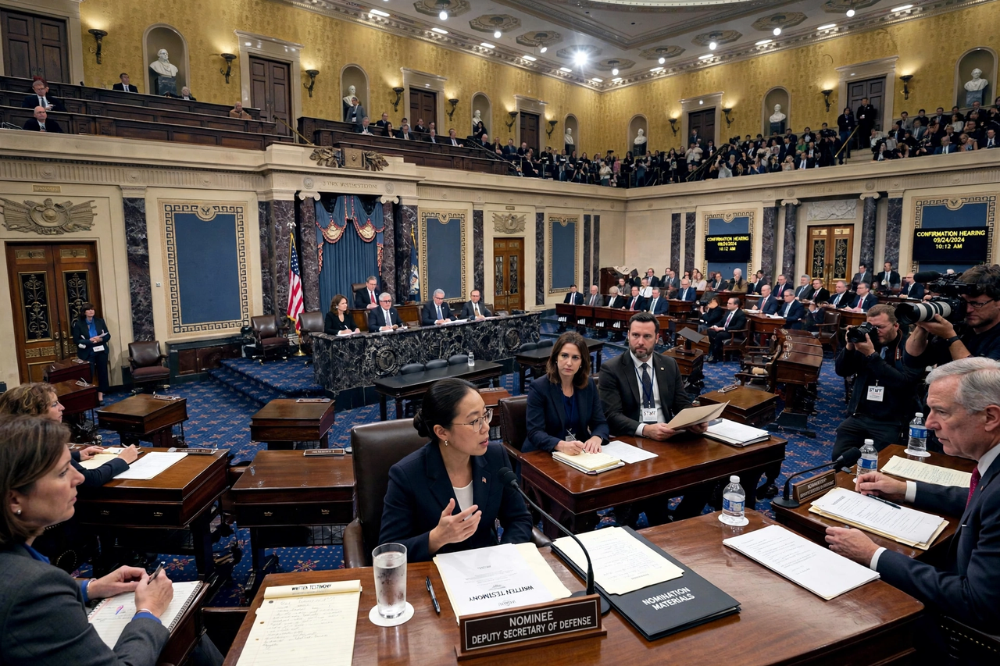

Advice and consent

In the United States, "advice and consent" is the power of the United States Senate to be consulted on and approve treaties and key appointments made by the president of the United States, including Cabinet secretaries, federal judges, officers of the United States, heads of regulatory commissions, ambassadors and other smaller appointments. The phrase appears in Article Two of the United States Constitution, and is also used in state constitutions to describe the state senate's role in confirming the governor's appointments.
Constitutional basis
Article II, Section 2, Clause 2 of the U.S. Constitution provides that the president "shall nominate, and by and with the Advice and Consent of the Senate, shall appoint Ambassadors, other public Ministers and Consuls, Judges of the supreme Court, and all other Officers of the United States". The same clause gives the president power to make treaties "by and with the Advice and Consent of the Senate ... provided two thirds of the Senators present concur".
Historical background
The phrase was borrowed from British practice, in which the Privy Council advised the monarch. At the Constitutional Convention of 1787, the appointment power was debated extensively; the final compromise gave the president the initiative in nominating while checking appointments with Senate approval. An early incident shaped the practice: in August 1789, President George Washington visited the Senate in person to seek advice on a treaty with the Creek Nation. The Senate deferred the matter to committee, and Washington, frustrated, never repeated the experiment — the "advice" function thereafter developed into review of completed nominations and negotiated treaties.
Process
Most nominations are referred to a standing committee of the Senate, which may hold hearings and report the nomination to the full Senate. Debate on nominations is subject to cloture; following precedents set in 2013 (for executive and most judicial nominations) and 2017 (for Supreme Court nominations), cloture on nominations requires only a simple majority rather than sixty votes — the so-called nuclear option. The Senate may confirm, reject, or take no action, in which case the nomination is typically returned to the president at the end of a session. Rejections by recorded vote are rare — the Senate has rejected only a small number of Cabinet nominees in its history, most recently John Tower for Secretary of Defense in 1989 — but many nominees are withdrawn or stalled. When the Senate is in recess, the president may make recess appointments, which expire at the end of the Senate's next session, a power significantly curtailed by the Supreme Court's decision in NLRB v. Noel Canning (2014).
Treaties
Treaties require a two-thirds majority of senators present. The Foreign Relations Committee considers the treaty and reports it, often with reservations, understandings or declarations. Fewer treaties are submitted in modern practice, as presidents have preferred executive agreements, which do not require Senate approval.